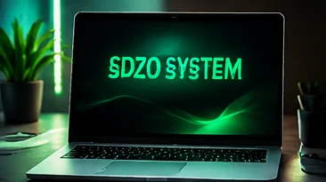
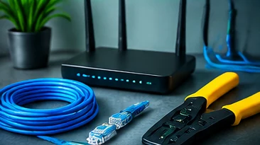
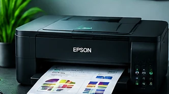
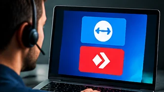
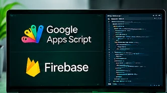
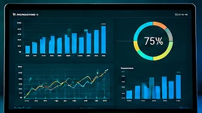
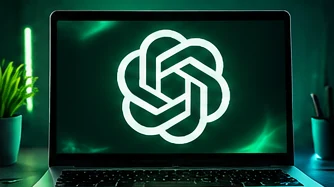
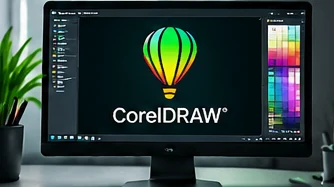

Mantenimiento informático
Mantenimiento preventivo de ordenadores y portátiles, limpieza, diagnóstico y revisión del funcionamiento.

Soporte informático, automatización de procesos, soluciones digitales y seguridad informática.
Soluciones informáticas y digitales para particulares y organizaciones.
Mantenimiento de ordenadores y portátiles.
Ver detalles →
Ethernet, crimpado RJ45, routers y Wi-Fi.
Ver detalles →Ampliación de hardware y mejora del rendimiento.
Ver detalles →Aplicaciones, antivirus y controladores.
Ver detalles →
Instalación y configuración de dispositivos.
Ver detalles →
Soporte a distancia para aplicaciones y programas.
Ver detalles →
Google Apps Script, hojas de cálculo y Firebase.
Ver detalles →
Visualización web de resultados y productividad.
Ver detalles →Microsoft Office y hojas de cálculo.
Ver detalles →
Asistencia en proyectos y organización de trabajos.
Ver detalles →
Tarjetas comerciales y materiales publicitarios.
Ver detalles →Edición de vídeos y contenidos multimedia.
Ver detalles →Asesoramiento en protección de información, seguridad de dispositivos y prevención de riesgos digitales.
Conocer más →Mantenimiento preventivo de ordenadores y portátiles, limpieza, diagnóstico y revisión del funcionamiento.
Cableado Ethernet, crimpado de conectores RJ45, configuración de routers y redes Wi-Fi.
Asesoramiento en ampliación de memoria RAM, instalación de discos SSD y sustitución de componentes compatibles para mejorar el rendimiento.
Instalación y configuración de aplicaciones, antivirus y controladores debidamente licenciados.
Configuración de impresoras locales, inalámbricas y compartidas mediante redes.
Instalación y configuración de aplicaciones a distancia mediante conexiones autorizadas por el usuario.
Automatización de tareas repetitivas mediante Google Apps Script e integración de información con bases de datos Firebase.
Desarrollo de paneles web para visualizar resultados, indicadores de producción y seguimiento de actividades.
Manejo de Microsoft Office y hojas de cálculo para organizar documentos e información.
Aplicación de herramientas de inteligencia artificial para apoyar proyectos, organizar trabajos y mejorar la productividad.
Diseño de tarjetas de presentación, publicidad y materiales gráficos. Nivel intermedio.
Edición de vídeos y preparación de contenidos multimedia. Nivel intermedio.
Orientación sobre protección de información, prevención de riesgos y buenas prácticas de seguridad digital.
Ingeniero de Sistemas y Máster en Seguridad Informática.
Profesional con experiencia en actividades administrativas, soporte informático, gestión de información y herramientas digitales.
Interesado en la integración de tecnología, automatización de procesos, seguridad informática e inteligencia artificial para mejorar la productividad.
Extensión de Chrome para respaldar conversaciones de un proyecto propio de ChatGPT en archivos TXT almacenados en Google Drive.
Prototipo funcionalSincronización de información desde Google Sheets hacia Firebase mediante Google Apps Script.
Integración funcional. Sistema de alertas en desarrollo.Portal tecnológico desarrollado mediante HTML, CSS y JavaScript, con noticias de ciberseguridad y enlaces protegidos mediante cifrado AES-256.
Proyecto en evoluciónActualidad, amenazas, vulnerabilidades y novedades de ciberseguridad.
Madrid, España
Conoce mi trayectoria profesional, competencias y proyectos tecnológicos.